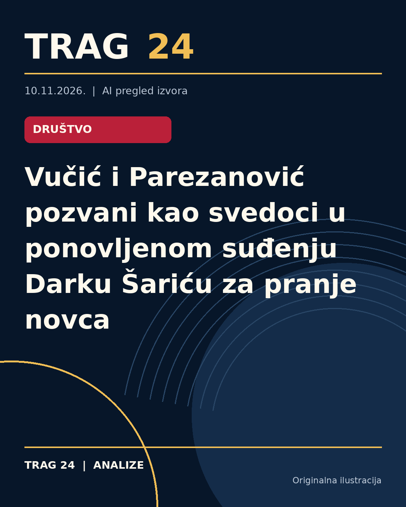

Vučić i Parezanović pozvani kao svedoci u ponovljenom suđenju Darku Šariću za pranje novca

ŠTA SE DOGODILO
Sudija Vladan Ivanković, predsedavajući Sudskim većem Posebnog odeljenja Višeg suda u Beogradu, odlučio je da bivši predsednik Srbije Aleksandar Vučić i Marko Parezanović iz Bezbednosno-informativne agencije budu pozvani kao svedoci u postupku u kome je optužen Darko Šarić, i drugi, za pranje novca. Ovaj postupak se odnosi na navodnu sumnju da je oprano najmanje 20 miliona evra stečenih kriminalom trgovine narkoticima.
HRONOLOGIJA
Optužnica protiv Darka Šarića i saradnika podignuta je još 2010. godine, što čini ovaj postupak jednim od najdužih u okviru Posebnog odeljenja Višeg suda. Šarić je prvostepeno 2020. godine osuđen na devet godina zatvora za pranje novca, ali je presuda 2022. godine ukinuta zbog nalaza Apelacionog suda da je prvostepena presuda nejasna i protivrečna, te je naloženo ponovno suđenje. Sudski postupak je u toku, a sva trojica okrivljenih su trenutno van sudnice, prisutni su njihovi advokati.
ŠTA NAVODE IZVORI
Sudski izvori, kako prenose Insajder, N1, Nova.rs i Danas, potvrđuju da su Vučić i Parezanović pozvani kao svedoci. Između ostalog, ranije su se pojavile i informacije da je u nekim skaj porukama, do kojih je došao nedeljnik Radar, Vučić označen nadimcima "Oskar" i "Čvarak", koji su korišćeni u komunikaciji Darka Šarića sa saradnicima. Međutim, ovi detalji nisu potvrđeni u zvaničnom sudskom postupku niti su obuhvaćeni aktuelnom odlukom o svedočenju.
ŠTA JE POTVRĐENO
Potvrđeno je da se vodi proces protiv Darka Šarića i druga zbog sumnje u pranje novca od najmanje 20 miliona evra, da je prvostepena presuda ukinuta i da je naloženo ponovno suđenje. Takođe je potvrđeno da su Vučić i Parezanović pozvani kao svedoci. U toku postupka, sudija Vladan Ivanković je doneo odluku o njihovoj pozivnici.
ŠTA NIJE POTVRĐENO
Nije potvrđeno šta će konkretno biti predmet njihovog svedočenja, niti da postoje dokazi ili tvrdnje da su Vučić ili Parezanović na bilo koji način umešani ili povezani sa krivičnim delima. Informacije o nadimcima i kontaktima predstavljaju navode medija koji nisu zvanično potvrđeni u sudskom postupku.
ŠTA OSTАJE OTVORENO: Otvoreno je pitanje kako će njihovo svedočenje uticati na dalji tok postupka i kakve će izjave dati ako se pojave pred sudom. Takođe ostaje nepoznato da li će se pojaviti dalji novi dokazi ili svedoci, kao i kada će ponovljeno suđenje biti završeno. Ostaje nejasno da li će postupak usled dugotrajnosti imati završni epilog u skorijem periodu.
Izvori
- https://n1info.rs/vesti/vucic-marko-parezanovic-svedoce-protiv-sarica-pranje-para/
- https://nova.rs/vesti/hronika/aleksandar-vucic-i-marko-parezanovic-bice-pozvani-na-sud-zbog-darka-sarica/
- https://www.danas.rs/vesti/drustvo/vucic-parezanovic-svedoci-darko-saric/
Ova analiza je pripremljena uz pomoć veštačke inteligencije na osnovu javno dostupnih izvora. Navodi izvora nisu nužno nezavisno potvrđeni.